jedediyah.github.io/aapt2024
Sensitive Dependence on
Initial Conditions
AAPT Summer
Conference 2024
AI in K-12 Classrooms
jedediyah.github.io/aapt2024
There is too much to talk about!
- Power
- Surveillance
- Privacy
- Security
- Consent
- Access
- Fairness
- Education
- Energy
- Military
- Misuse
- Adversarial Attacks
- Disinformation
- Liberty
- Discrimination
- Labor
- Environment
- Exploitation
- Law and Oversight
- Accountability
- Justice
- Data Ethics
- AI Ethics
- Fair ML
- Fair AI
- Algorithmic Bias
- Data Bias
Motivations for this talk
- The largely uncritical view of AI being presented to educators.
- A push to educate, not critical thinkers, but fateful consumers, i.e., "AI literacy" as a consumer skillset instead of a technical skillset
https://twitter.com/petergyang/status/1793480607198323196/photo/1
cheese not sticking to pizza
↓
... add about 1/8 cup of glue

how many rocks should I eat
↓
... at least one small rock per day
A common misconception is that
data + compute → solutions
If the problem isn't solved yet, it's just because you haven't added enough technology yet!

"However, two major discoveries of the twentieth century showed that Laplace's dream of complete prediction is not possible, even in principle...
It was the understanding of chaos that eventually laid to rest the hope of perfect prediction of all complex systems, quantum or otherwise." (Mitchell, 2019, p. 20)
"But even if it were the case that the natural laws had no longer any secret for us, we could still only know the initial situation approximately.
...
it may happen that small differences in the initial conditions produce very great ones in the final phenomenon.
...
Prediction becomes impossible."
(Poincaré, 1908, as cited in Mitchell, 2019, p. 21)
https://twitter.com/standupmaths/status/741251532167974912
"The lack of humility before nature that's being displayed here staggers me." - Malcolm, Jurassic Park


A lot of recent hype stems from
anthropomorphizing text generation machines
↓


"LLM chatbots have been designed in a way, known by psychologists and ethicists, to trick humans into believing they are intelligent."
"The hype is a lie"
- Tesla faked self-driving AI demo
- Google faked Duplex AI demo
- Google faked Gemini AI demo
- Google Deep Mind claims to discover 2.2 million compounds
- Amazon Fresh "walk out" turns out to be 1000 people in India
- Facebook chatbot M powered largely by humans
- Microsoft covered up vulnerabilities in DALL-E 3 image generator
- Rabbit R1 turns out to just be an Android app
- Humane AI Pin edited video to fix incorrect answers
- OpenAI reported 90th-percentile performance on Bar Exam.

"Not only do many of the hiring tools not work, they are based on troubling
pseudoscience
and can discriminate"
Hilke Schellmann tried the
myInterview tool to check her "hiring score":
- Honest interview in English: 83%
- Reading a random wikipedia page in German: 73%
- Getting a robot voice to read her English: 79%
"Our success,
happiness, and wellbeing are never fully of our own making. Others' decisions can profoundly affect
the course of our lives...
Arbitrary, inconsistent, or faulty decision-making thus raises
serious concerns..."
- Fairness and Machine
Learning, Barocas, Hardt, and Narayanan
Educational technologies have a long history of failures.
Ed Tech companies promoting new tech:
"This time, things will be different"


 "We can be impressed by their performance on some inputs,
"We can be impressed by their performance on some inputs,
but there are infinitely many inputs
where they must fail."
- Iris van Rooij (26:02)
Algorithms are brittle - Melanie Mitchell

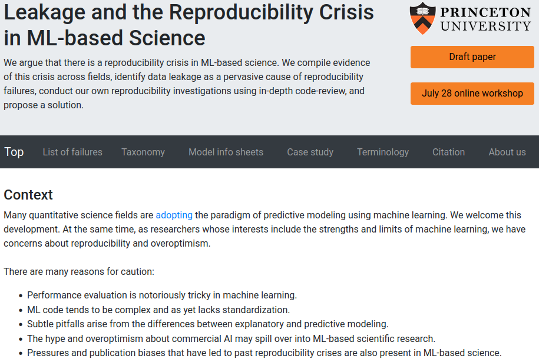

 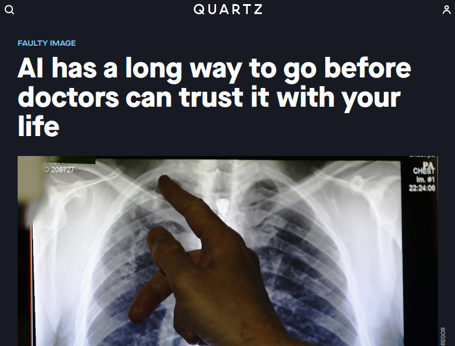
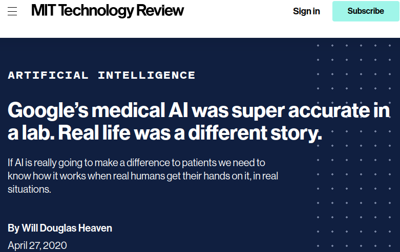
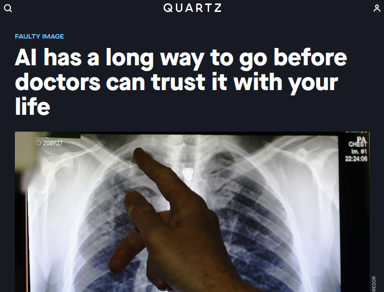
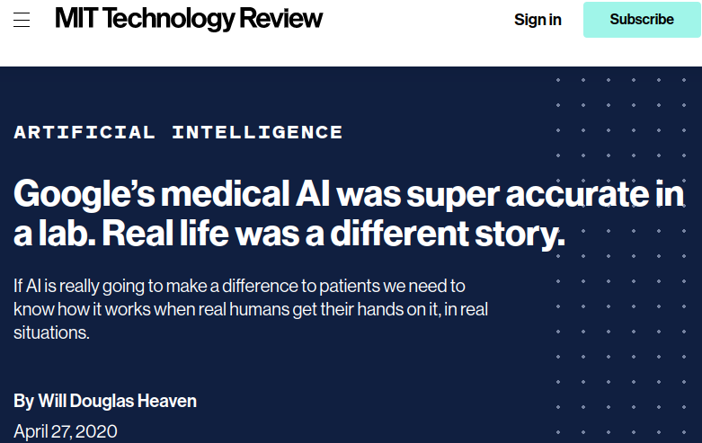
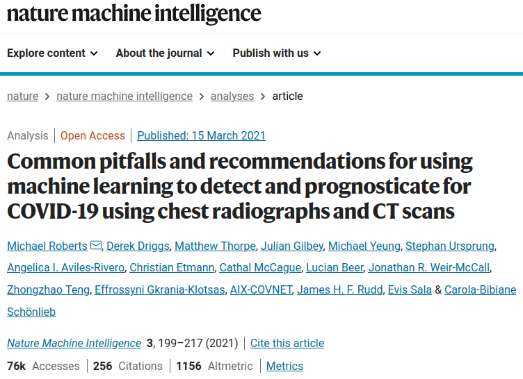

 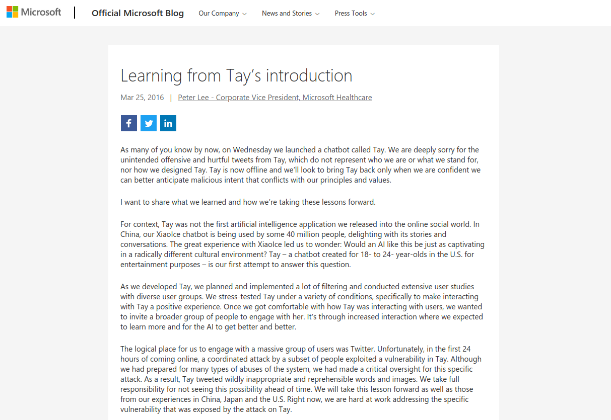
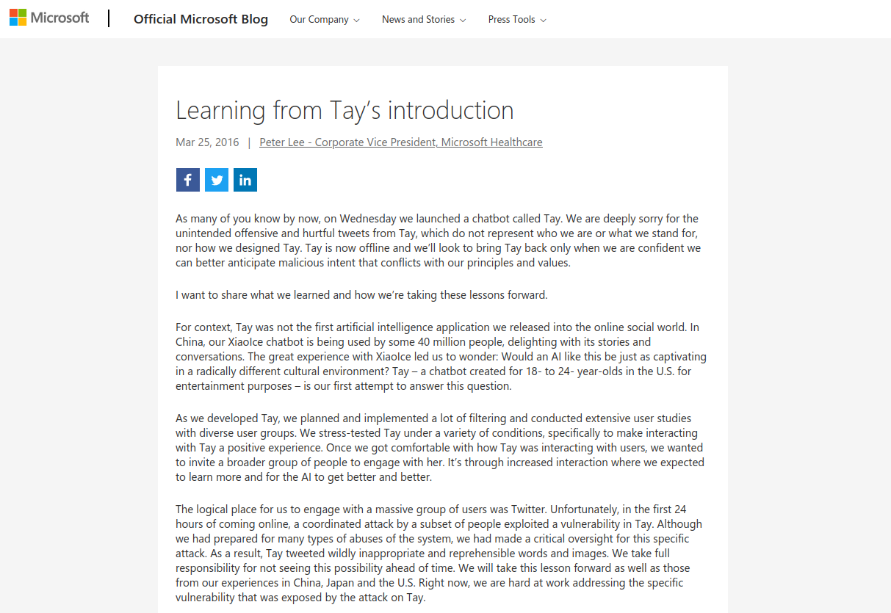

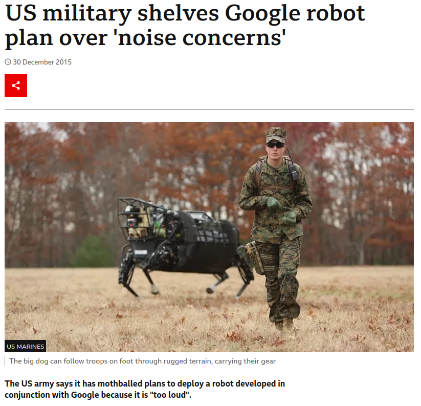


Humble Requests
Be scientists (curious and reasonably skeptical)
- Ask: What does the tech claim to do? Is that useful?
- Ask: Does this tech actually do what it claims to do?
- Recognize that advertisements are not peer reviewed research
Be ethical educators
- Do not give sensitive student data to tech companies
- Do not volunteer your students as experimental subjects
- Ask: What are the consequences *when* a technology breaks?
jedediyah.github.io/aapt2024


AI technologies are contributing to an environment where those "in the know" about how to game these
broken systems have advantages.
Let's play a game!
It's called phisiognomy!
Given a face, you try to guess are they good or bad.
↓


Good!
"He is a person of large vital force and chest capacity; great intellectual power and command of language...
Physically considered, he is a splendid animal"
Bad :(
"Here is a nature that will want to receive money without having to work hard for it...
judging from this picture she has a free and easy style of conduct and not very conscientious as to right and wrong"

Bad :(
"Here is a mouth that looks beastly and the expression of the eyes is
anything but pure...
There is little good to be seen in this face;
it is indicative of a low,
coarse and gross type of character."

Good!
"What a noble countenance, and what a magnificent head in the top part where the moral faculties are located!
... The expression of the eyes is pure, wise and honest."
Good!
"The perceptive faculties are very largely developed in this gentleman. Observe the immense development directly over the nose and eyes, which imparts an observing, knowing, matter-of-fact and practical cast of mind."

Evil!!
"These small, black eyes are insinuating, artful, suggestive and wicked.
The face, though pretty, is mere animal beauty; nothing spiritual about it."

Wicked!!
"This is an artful, evasive, deceitful, lying, immodest and immoral eye; its very expression is suggestive of insincerity and wickedness...
The mouth also has a common and fast look."

Highway robber!
"An unprincipled looking face; the eyes have a sneaky appearance...
The upper part of the forehead in connection with the hair seems to say, I prefer to make my living by my wits..."
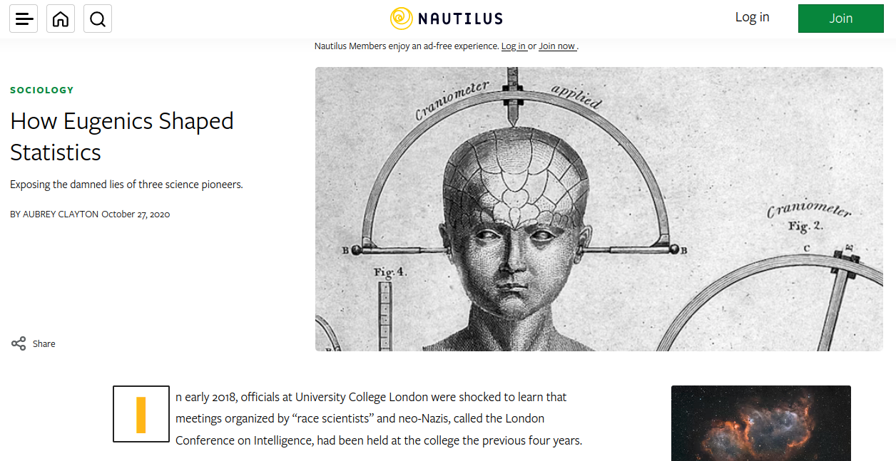
Galton coined the term "eugenics" in 1883.
Pearson was a student of Galton's and they worked with Fisher.
The three were pioneers of Statistics, which developed with their attempts to support bigotry on a scientific foundation.
 https://medium.com/@blaisea/physiognomys-new-clothes-f2d4b59fdd6a
https://medium.com/@blaisea/physiognomys-new-clothes-f2d4b59fdd6a
 "Wu and Zhang’s sample ‘criminal’ images (top) and ‘non-criminal’ images (bottom)." 2016
"Wu and Zhang’s sample ‘criminal’ images (top) and ‘non-criminal’ images (bottom)." 2016


To what extent are we training the next generation of pseudoscientists?
To what extent are we training the next generation of pseudoscientists?
Many ethical pitfalls are technical pitfalls.
 "Simplistic stereotypes is really not a basis for developing AI, and if your AI is based on this then basically what you're doing is enshrining stereotypes in code." (11:42)
"Simplistic stereotypes is really not a basis for developing AI, and if your AI is based on this then basically what you're doing is enshrining stereotypes in code." (11:42)

You may wonder:
Are there any consequences of developing and deploying broken technologies into critical decision making scenarios?
↓
Some of the more well known harms


Standford Med blames algorithm


https://www.nytimes.com/2019/08/16/technology/ai-humans.html
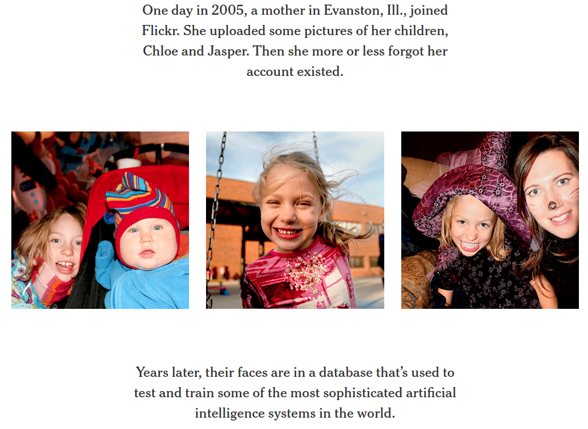


 Anatomy of an AI system, Crawford
and Joler
Anatomy of an AI system, Crawford
and Joler
Adversarial attack


Lack of oversight or auditing
The act, by those in power, of making decisions for us is a display of the imbalance of power.
- Sun-ha Hong,
Prediction as Extraction of
Discretion
We are being surveilled.


 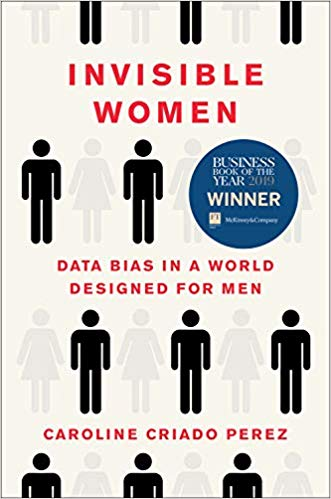
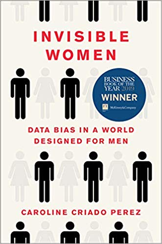


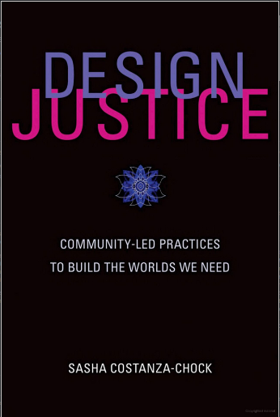


Critical Questions about Data Projects:
- What are the motivations for the project?
- What is the intended use?
- What is the unintended use or misuse?
- Where does the data come from?
- Who collects the data?
- Who owns the data?
- How is the data collected?
- How is the data stored?
- How old is the data?
- When will the data expire?
- How will the data be secured?
- What happens with the data when the company is sold?
- Who does the labeling?
- What labels will they decide to use?
- Are the labelers experts?
- Are the labels accurate?
- What biases are represented in the data?
- How is data included or excluded?
- How are outliers addressed?
- What subpopulations are represented?
- What subpopulations are over- or underrepresented?
- What portions of the data are inspected?
- What features are selected for modeling?
- What model is chosen?
- What features do we think are being modeled?
- What latent features are actually being modeled?
- What is the domain of the model?
- What are the consequences of error?
- What decisions will be made with the model?
- What biases are perpetuated?
- Where will the model be deployed?
- What could go wrong?
- Who is responsible when things go wrong?
- How can issues be reported?
- Will new data be fed back in to update the model?
"AI Literacy" should include:
- Understanding that advertisements from tech companies are advertisements. They are trying to make money by selling you things.
- AI systems frequently do not work, and deploying AI haphazardly causes harm.
- Being a good scientist includes being reasonably critical and aware of biases
Resources
- GenAI
& Ethics: Investigating ChatGPT, Gemini, and Copilot - Dr. Torrey Trust
- DAIR Mystery AI Hype Theater
3000
- AI Snake Oil
- AI Now Institute: https://ainowinstitute.org/
- Lighthouse3, AI Ethics Weekly - https://lighthouse3.com/newsletter/
- Rachel Thomas Fast.ai Data Ethics Course
- Ethics
in Mathematics Readings - Allison N. Miller
- Automating Ambiguity: Challenges and
Pitfalls of Artificial Intelligence - Abeba Birhane
- On the dangers of stochastic parrots:
Can language models be too big? - Emily M. Bender, Timnit Gebru, Angelina
McMillan-Major, and Margaret Mitchell
- Rachael Tatman - YouTube
- SaTML 2023 - Timnit Gebru
- Eugenics and the Promise of Utopia through AGI
- A.I. and Stochastic
Parrots | FACTUALLY with Emily Bender and Timnit Gebru
- AIES '22: Proceedings of the 2022 AAAI/ACM Conference on AI, Ethics, and Society https://dl.acm.org/doi/proceedings/10.1145/3514094
AI in K-12 Classrooms
There is too much to talk about!
|
|
|
|
|
|
Motivations for this talk
- The largely uncritical view of AI being presented to educators.
- A push to educate, not critical thinkers, but fateful consumers, i.e., "AI literacy" as a consumer skillset instead of a technical skillset
| https://twitter.com/petergyang/status/1793480607198323196/photo/1 |
cheese not sticking to pizza ↓
... add about 1/8 cup of glue
|
|
|
how many rocks should I eat ↓
... at least one small rock per day
|
A common misconception is that
data + compute → solutions
If the problem isn't solved yet, it's just because you haven't added enough technology yet!
|
|
"However, two major discoveries of the twentieth century showed that Laplace's dream of complete prediction is not possible, even in principle...
It was the understanding of chaos that eventually laid to rest the hope of perfect prediction of all complex systems, quantum or otherwise." (Mitchell, 2019, p. 20) |
|
|
"But even if it were the case that the natural laws had no longer any secret for us, we could still only know the initial situation approximately.
... it may happen that small differences in the initial conditions produce very great ones in the final phenomenon. ... Prediction becomes impossible." (Poincaré, 1908, as cited in Mitchell, 2019, p. 21) |
https://twitter.com/standupmaths/status/741251532167974912

"The lack of humility before nature that's being displayed here staggers me." - Malcolm, Jurassic Park
anthropomorphizing text generation machines
↓


"LLM chatbots have been designed in a way, known by psychologists and ethicists, to trick humans into believing they are intelligent."
"The hype is a lie"
- Tesla faked self-driving AI demo
- Google faked Duplex AI demo
- Google faked Gemini AI demo
- Google Deep Mind claims to discover 2.2 million compounds
- Amazon Fresh "walk out" turns out to be 1000 people in India
- Facebook chatbot M powered largely by humans
- Microsoft covered up vulnerabilities in DALL-E 3 image generator
- Rabbit R1 turns out to just be an Android app
- Humane AI Pin edited video to fix incorrect answers
- OpenAI reported 90th-percentile performance on Bar Exam.
|
|
"Not only do many of the hiring tools not work, they are based on troubling pseudoscience and can discriminate" |
Hilke Schellmann tried the
myInterview tool to check her "hiring score":
- Honest interview in English: 83%
- Reading a random wikipedia page in German: 73%
- Getting a robot voice to read her English: 79%
"Our success, happiness, and wellbeing are never fully of our own making. Others' decisions can profoundly affect the course of our lives...
Arbitrary, inconsistent, or faulty decision-making thus raises serious concerns..."
- Fairness and Machine Learning, Barocas, Hardt, and Narayanan
| Educational technologies have a long history of failures. |
Ed Tech companies promoting new tech:
"This time, things will be different"
"We can be impressed by their performance on some inputs, but there are infinitely many inputs where they must fail."
- Iris van Rooij (26:02)
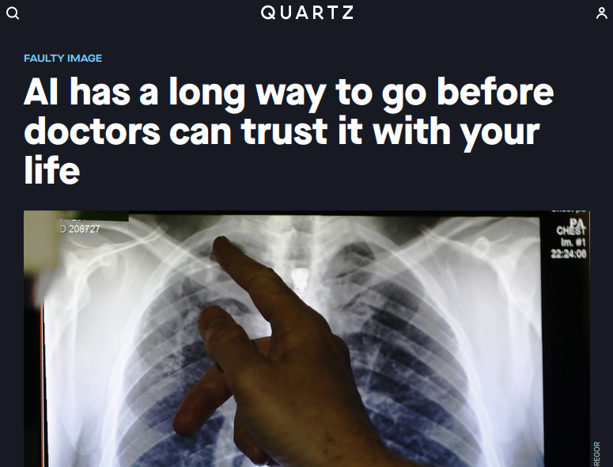
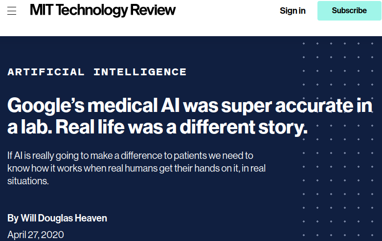
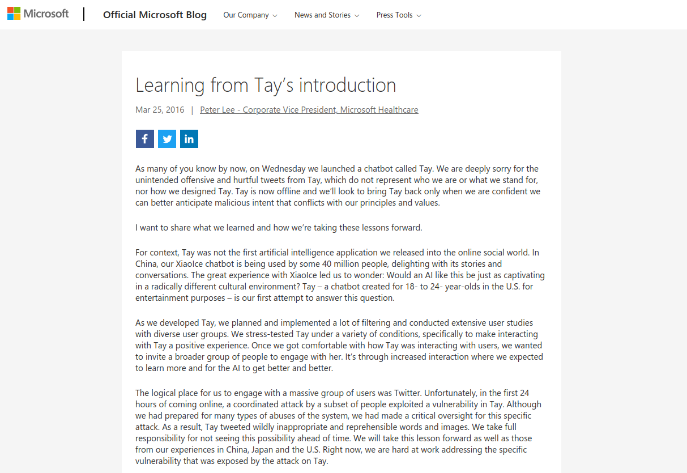
Humble Requests
Be scientists (curious and reasonably skeptical)
- Ask: What does the tech claim to do? Is that useful?
- Ask: Does this tech actually do what it claims to do?
- Recognize that advertisements are not peer reviewed research
Be ethical educators
- Do not give sensitive student data to tech companies
- Do not volunteer your students as experimental subjects
- Ask: What are the consequences *when* a technology breaks?

Let's play a game!
It's called phisiognomy!Given a face, you try to guess are they good or bad.
↓
Good!
"He is a person of large vital force and chest capacity; great intellectual power and command of language...
Physically considered, he is a splendid animal"
Physically considered, he is a splendid animal"
Bad :(
"Here is a nature that will want to receive money without having to work hard for it...
judging from this picture she has a free and easy style of conduct and not very conscientious as to right and wrong"
judging from this picture she has a free and easy style of conduct and not very conscientious as to right and wrong"
Bad :(
"Here is a mouth that looks beastly and the expression of the eyes is
anything but pure...
There is little good to be seen in this face;
it is indicative of a low,
coarse and gross type of character."
anything but pure...
There is little good to be seen in this face;
it is indicative of a low,
coarse and gross type of character."
Good!
"What a noble countenance, and what a magnificent head in the top part where the moral faculties are located!
... The expression of the eyes is pure, wise and honest."
... The expression of the eyes is pure, wise and honest."
Good!
"The perceptive faculties are very largely developed in this gentleman. Observe the immense development directly over the nose and eyes, which imparts an observing, knowing, matter-of-fact and practical cast of mind."
Evil!!
"These small, black eyes are insinuating, artful, suggestive and wicked.
The face, though pretty, is mere animal beauty; nothing spiritual about it."
The face, though pretty, is mere animal beauty; nothing spiritual about it."
Wicked!!
"This is an artful, evasive, deceitful, lying, immodest and immoral eye; its very expression is suggestive of insincerity and wickedness...
The mouth also has a common and fast look."
The mouth also has a common and fast look."
Highway robber!
"An unprincipled looking face; the eyes have a sneaky appearance...
The upper part of the forehead in connection with the hair seems to say, I prefer to make my living by my wits..."
The upper part of the forehead in connection with the hair seems to say, I prefer to make my living by my wits..."
Galton coined the term "eugenics" in 1883.
Pearson was a student of Galton's and they worked with Fisher.
The three were pioneers of Statistics, which developed with their attempts to support bigotry on a scientific foundation.
Pearson was a student of Galton's and they worked with Fisher.
The three were pioneers of Statistics, which developed with their attempts to support bigotry on a scientific foundation.
https://medium.com/@blaisea/physiognomys-new-clothes-f2d4b59fdd6a
"Wu and Zhang’s sample ‘criminal’ images (top) and ‘non-criminal’ images (bottom)." 2016
To what extent are we training the next generation of pseudoscientists?
To what extent are we training the next generation of pseudoscientists?
Many ethical pitfalls are technical pitfalls.
"Simplistic stereotypes is really not a basis for developing AI, and if your AI is based on this then basically what you're doing is enshrining stereotypes in code." (11:42)
Are there any consequences of developing and deploying broken technologies into critical decision making scenarios?
↓
Some of the more well known harms
Standford Med blames algorithm
https://www.nytimes.com/2019/08/16/technology/ai-humans.html
Anatomy of an AI system, Crawford
and Joler
- Sun-ha Hong, Prediction as Extraction of Discretion
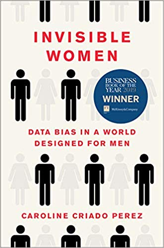
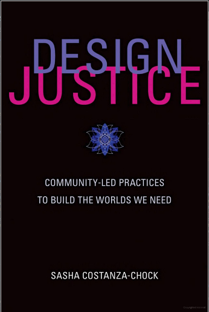
Critical Questions about Data Projects:
|
|
"AI Literacy" should include:
- Understanding that advertisements from tech companies are advertisements. They are trying to make money by selling you things.
- AI systems frequently do not work, and deploying AI haphazardly causes harm.
- Being a good scientist includes being reasonably critical and aware of biases
Resources
- GenAI & Ethics: Investigating ChatGPT, Gemini, and Copilot - Dr. Torrey Trust
- DAIR Mystery AI Hype Theater 3000
- AI Snake Oil
- AI Now Institute: https://ainowinstitute.org/
- Lighthouse3, AI Ethics Weekly - https://lighthouse3.com/newsletter/
- Rachel Thomas Fast.ai Data Ethics Course
- Ethics in Mathematics Readings - Allison N. Miller
- Automating Ambiguity: Challenges and Pitfalls of Artificial Intelligence - Abeba Birhane
- On the dangers of stochastic parrots: Can language models be too big? - Emily M. Bender, Timnit Gebru, Angelina McMillan-Major, and Margaret Mitchell
- Rachael Tatman - YouTube
- SaTML 2023 - Timnit Gebru - Eugenics and the Promise of Utopia through AGI
- A.I. and Stochastic Parrots | FACTUALLY with Emily Bender and Timnit Gebru
- AIES '22: Proceedings of the 2022 AAAI/ACM Conference on AI, Ethics, and Society https://dl.acm.org/doi/proceedings/10.1145/3514094